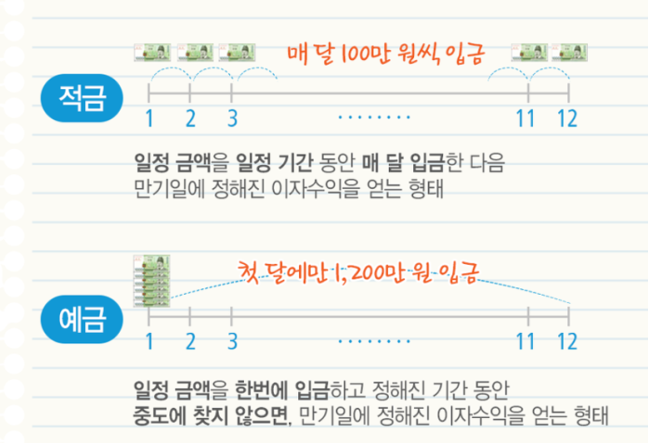

하지만 원금은 보장해주는걸?

하지만 원금은 보장해주는걸?
웃기지마 그런 상품이 어딨어
인플레이션 반영못하는건 맞는데 그렇다고 해서 예적금보다 더 수익률 높게 안정적으로 돈 벌수 있는건 아님. 최소 원금 보장이 우스운게 아닌데
물론 투자를 하면 예적금보다 더 많이 벌수는 있는데 문제는 투자자 10명 중 9명은 돈을 벌기능 커녕 잘못하다 원금마저 뜯기는건 알아야함. 뭐 나라면 할수있다하면 말릴이유 없지. 아니면 예적금 대신 지수추종까진 좋다고 봄
가끔 예적금은 돈녹이는 짓거리인건 안변한다고 하는 사람들있는데 그렇게 자신있음 주식으로 풀레버 땡겨서 투자해서 돈놓고 돈벌기 추천함
그냥 몰빵자체가 문제인거임. 자산을 어떤 형태로는 몰빵치면 리스크가 큰 것이고
예금 적금 주식 금 채권 등으로 나눠서 관리하는건 당연한 것임.
이건 너무나도 오래된 증명된 포폴방법인데 그냥 보수적이면 영구포폴로 가는게 맞음. 여기서 채권 정도는 빼도 되고 한두개 단순화는 좋고 당연히 정책적금인 청년희망적금은 풀로 넣고 가야하는건데
요즘은 주식 레버 몰빵! ㅇㅈㄹ 하거나
원금보장! 돌보다 수익률이 높다! 예금이 짱! ㅇㅈㄹ 떠니깐 어이가 없는것
ㅇㅇ 예적금으로 보험 들면서 유동자산으로 투자하면서 수익창출하는게 가장 이상적이라고 봄. 대신 비율을 어떻게 조정하고 포폴을 어떻게 짜느냐에서 취향이 갈리는거지
그치 근데 사실 예금 적금만 하는 사람은 그냥 귀찮아서인데
그냥 25퍼로 나눠서 4개로 나누면 되는데 이것조차 귀찮아하는 사람이 많으니 신기할 따름
설마하니 어떤 미친놈이 포폴을 죄다 주식 레버리지에 몰빵하겠냐고
음.. 코리안?
머쓱......
정책상품<<국가가 허락한 돈복사임
주식도 보수적으로 하면 돈 벌 수 있는데.. 그놈의 욕심이 화근임
인간은 그 욕심을 이기기 힘들다
인간의 욕심은 끝이없고, 같은 실수를 반복한다..!
그치 주식투자하면 사람들 뭣도 모르면서 10% 20%수익 은 수익도아닌것처럼 보고 도박하려함
욕심부려서 많이 입금해도 원금이 안 깎인다고? 이자도 준다고? 에이...그런 게 어딨어? 거짓말하지마 ㅋㅋㅋ
투자 안하고 예적금 하는건 돈을 잃는거다. 주장하는 사람들중 투자로 예적금보다 수익률 높은 사람 못본듯
에? 우소 원금을 보장해주는 투자 수단이 있을리가 없잖아
원금을 보장해주면 은행은 땅파서 장사하냐
예금 3배 레버리지 상품 없냐
지금 더살때 아님?
미장은 향후 몇달동안은 빅세일아닌가??
누적으로 사서 절대 원금 안 까먹을 주식(우량주)는 많음...
2배냐 5배냐의 차이지
원금이 보장된다고?
어디서 그런 허무맹랑한 얘길 들었냐?
그래서 적당히 목돈 생기면 대출끼고 집산다 이게 전세계 어딜 가도 인플레 방어 기본값임
실물자산이 중요하긴해
제발 몰빵, 한방 노리지 말라고 몇십년을 이겨온 투자자들이 목이 터져라 외치는데 죽어라 말을 안들음.
예금 적금이 어찌보면 투자의 한종류지 은행에 투자해서 은행이 그돈으로 다른고객에게 대출해주고 이자 받아먹는건데 투자대비 수익이 ㅈ만해서 문제지만ㅋㅋㅋ
???:돈을 놀지못하게 해라

노리스크에 보장된 리턴은 쉬운게 아니죵
살려줘